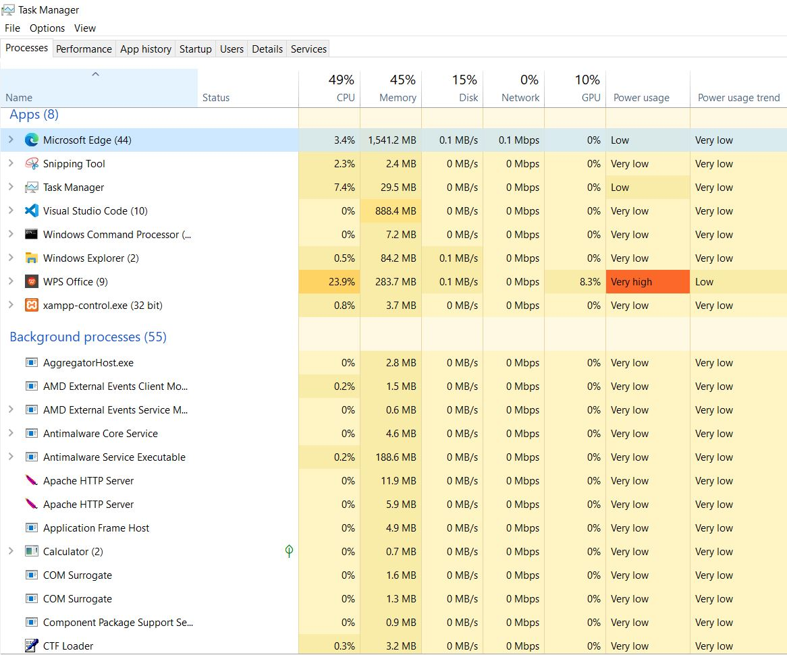
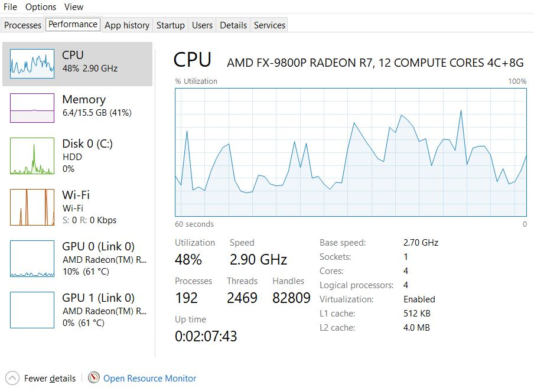
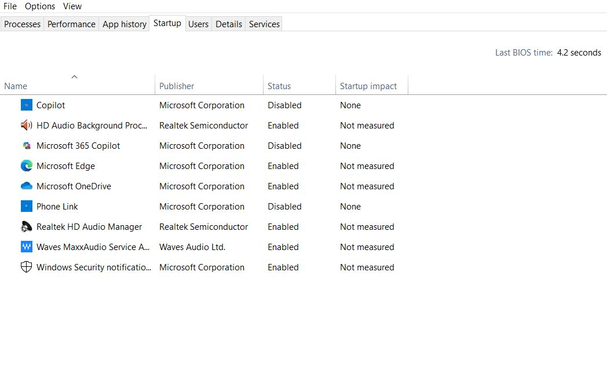
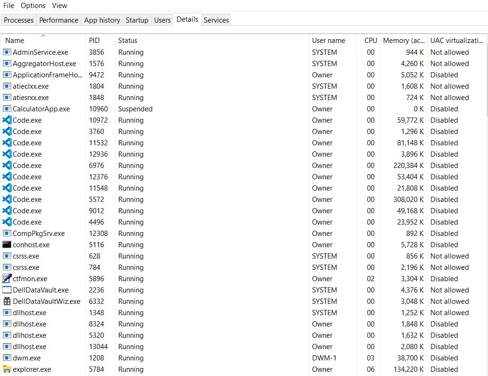

When troubleshooting a Windows PC that is not running as expected, you can utilize the Task Manager, which is a built-in utility that displays programs, processes and system activity running on a PC while offering some managerial control regarding APP usage. Hold Ctrl + Shift + ESC to access Task Manager. You can also right-click the task bar or press WIN key + X, and select it from the menu. By default, the task manager opens in simple view, but you can click the more details module to expand results. Once there, you can select the tab that suits your troubleshooting criteria. Once accessed, you can select from a hand-ful of options that are embedded in individual tabs. The task manager has seven tabs appropriately labeled processes, performance, app history, startup, users, details and services. This article focuses on four of these objectives (ranked in order of priority) for general PC troubleshooting:
The shows apps and background tasks using the most resources. Troubleshooters can readily spot high resource usage here.
The gives an overview of hardware health and bottlenecks.
When a PC is slow to startup you can use the to view which programs load automatically at boot.
The provides technical detail and advanced control. It is often used when you need to further explore the .
Core Concepts
There are several core concepts that troubleshooters must be keep in mind when working with the Processes and Performance tabs, as these are the key variables that will help ascertain and resolve specific PC issues.
The CPU measures the percentage of available processor capacity currently in use. Issues occur whenever there is a high sustained percent that is occupying significant compute time.
Metric Origin:> Measured as the percentage of active execution cycles versus available cycles in the CPU clock schedule.
Logical vs Physical Cores: Task Manager distinguishes logical processors (via hyper-threading) but aggregates in the main graph unless split view is enabled.
Base Speed vs Current Speed: Shows nominal clock frequency versus actual real-time frequency after dynamic scaling (Intel SpeedStep, AMD Cool'n'Quiet).
Uptime: Tracks the continuous run time since last system boot -key for diagnosing hangs versus fresh-start problems.
Handles / Threads / Processes: Counts objects in use by the OS; spikes can indicate runaway software or leaks.
The Memory targets the working set of RAM a process holds. High memory use reduces free RAM and forces paging if demand exceeds physical memory.
Physical Memory Usage: Represents allocated RAM pages versus total available capacity.
Committed Memory: Sum of RAM in use and virtual memory reserved in the pagefile -if committed memory exceeds physical RAM, paging will occur.
Cached Memory: Pages kept in RAM for quick reuse, available to be freed if needed.
Hardware Reserved: Portion of memory mapped for device firmware (e.g., GPU VRAM mapping).
Page Faults: When required data is not in RAM and must be loaded from storage -visible indirectly through spikes in disk usage during low RAM conditions.
The Disk reads/writes I/O activity. High sustained disk activity or long I/O queues cause slow application response and system-wide lag.
Activity Measurement: Reports read/write requests per second and transfer rates, derived from the storage driver queue.
Active Time (%): Reflects how busy the storage device is servicing I/O requests -high active time with low throughput indicates latency.
Response Time (ms): Average delay per read/write -spikes here can indicate mechanical HDD delay, SSD wear, or driver issues.
Disk Queue Length: Shows backlog of pending I/O -persistent high queues indicate a bottleneck.
The Network demonstrates bytes per second being sent/received by the process. Unexpected network traffic can indicate background updates, syncs, or malicious activity.
Throughput: Measured in Mbps (megabits per second) for send and receive directions.
Link Speed: Physical connection speed negotiated with the network adapter (e.g., 1 Gbps).
Utilization (%): Current bandwidth usage compared to maximum link speed.
Packets Sent/Received: Useful for identifying packet loss patterns or network saturation.
The GPU highlights the GPU engine and VRAM consumption for compute tasks. High GPU use affects rendering-heavy applications and hardware-accelerated operations.
Workload Types: Split into 3D rendering, video encode/decode, and compute workloads.
Dedicated vs Shared Memory: VRAM (dedicated) versus RAM borrowed for graphics tasks (shared).
Temperature and Clock Speeds: May be displayed depending on driver support -critical for thermal diagnostics.
Engine Usage Graphs: Separate timelines for each GPU engine type to pinpoint which workload is driving GPU load.
Heuristics & Safe Thresholds:
CPU: sustained > 70-80% indicates a bottleneck that needs action.
The Processes-tab serves as the primary interface for monitoring and managing running applications and system processes in real-time. This tab presents a user-friendly view of system activity by grouping related processes under recognizable application names and displaying their current resource consumption across CPU, memory, disk, network, and GPU usage. Unlike other Task Manager tabs that focus on historical data or system-wide metrics, the Processes tab provides immediate visibility into which specific programs are actively consuming system resources at any given moment. You can sort columns to quickly pinpoint consistently high usage then right-click unresponsive applications to close them. This makes it the go-to tool for identifying performance bottlenecks, terminating unresponsive applications, and detecting suspicious processes with unfamiliar names that may indicate malware or unwanted software running on the system.
Its primary functions include real-time resource monitoring, application management and system analysis. The first displays current CPU, memory, disk, network, and GPU usage for all running processes, sorts processes by resource consumption to identify the heaviest system users, and updates resource metrics continuously to track changing system conditions. The second ends unresponsive applications that have stopped responding to user input and terminates background processes that are consuming excessive resources. The third identifies unfamiliar processes that may indicate malware, monitors background system activity and processes, tracks resource usage patterns, and verifies which applications are running versus what appears in the system tray.

Processes-tab Troubleshooting Applications
Resolving System Slowdowns: When your computer becomes sluggish or unresponsive, sort processes by CPU or memory usage to immediately identify which applications are consuming the most resources. This reveals whether the slowdown stems from a specific program or multiple processes competing for system resources.
Handling Unresponsive Applications: Right-click programs that freeze or stop responding and select "End task" to force closure when normal shutdown methods fail.
Detecting Suspicious Activity: Examine running processes for unfamiliar names, especially those consuming significant resources or network bandwidth. Legitimate system processes typically have recognizable names and publishers, while malware often uses generic or misleading process names.
Managing System Resources: During resource-intensive activities like gaming or video editing, monitor which background processes are competing for CPU, memory, or disk access. Temporarily close unnecessary applications to free up resources for priority tasks.
Using the Processes-tab
Open the Task Manager: Ctrl + Shift + ESC.
Sort by Resource:
Sort by CPU if system is slow.
Sort by Memory if APPs are lagging.
Sort by Disk if file operations are slow.
Sort by Network if Internet activity is slow.
Identify the APP that Consumes the MOST and Notate:
Process Name
User
Process Type
PID
Field Challenge: Open TM, click 'Processes' and sort by CPU => Open web browser with multiple tabs and watch CPU % rise => Then close browser and observe CPS drop.
The Performance-tab
The Performance-tab provides real-time monitoring and historical graphs of system resources, making it essential for diagnosing hardware bottlenecks and performance issues. Unlike the Processes tab which shows individual applications, the Performance tab reveals overall system health and resource availability.
The graphs display utilization percentages over time rather than absolute capacity, providing context for performance patterns with chart updates in intervals per second. This historical view helps distinguish between temporary spikes and sustained resource pressure that requires intervention.
The Performance-tab has two primary functions. The first is hardware monitoring, providing real-time data on CPU, memory, disk and network resource usage, allowing troubleshooters to identify which hardware component is creating system bottlenecks. The second function provides system analysis, confirming hardware specifications, detecting background activity (i.e. downloads), and verifying how specific workloads impact different resources.

Performance-tab Troubleshooting Applications
Diagnosing Slowdowns: When your PC becomes sluggish, the Performance tab quickly reveals which resource has reached capacity. Look for components showing sustained high usage (80%+ utilization) or frequent spikes to maximum levels.
Testing Application Impact: Launch programs while monitoring the Performance tab to observe resource consumption patterns. This helps identify whether applications are CPU-intensive, memory-hungry, or demanding on storage systems.
Monitoring Heavy Operations: During resource-intensive tasks like gaming, video editing, or large file transfers, the Performance tab shows real-time impact and helps determine if hardware upgrades are needed.
Using the PERFORMANCE-tab
Open the Task Manager: Ctrl + Shift + ESC.
Select a Cateory: (Make a Selection, observe live graphs and look for spikes or constant high usage.)
Use CPU to visualize utilization %, logical processors, threads and base speed versus actual speed. You can test CPU by:
using the command prompt: for /l %x in (1, 1, 50000) do @echo %x >nul
by watching CPU speed drop to base speed when idle, then spike higher when you start a heavy app (i.e. 7-Zip benchmark).
Use Memory to view committed, cached and reserved hardware in-use. You can test Memory by:
: Open multiple large browser tabs (YouTube 1080p videos on loop) until committed memory approaches or exceeds physical RAM — watch disk activity as paging begins.
: Open a large folder in Explorer (with many thumbnails). Close it. Reopen — notice much faster load due to cached data in RAM.
: Compare installed vs usable RAM in System Information. Hardware reserved stays constant regardless of load.
abc
Use Network to visualize utilization %, link speed, throughput and packets. You can test Network by:
: Download a large file from a fast mirror (e.g., Microsoft ISO download) and compare measured Mbps to your ISP's plan.
: use the command prompt ping 8.8.8.8 -t.
Use GPU to see engine load, VRAM usage and dedicated vs. Shared memory. You can test GPU by:
: Run Windows built-in “win+G” Xbox Game Bar performance overlay while launching a 3D game or GPU stress tool like FurMark.
: Open multiple high-res videos in VLC or Chrome. Video Decode engine usage will rise.
: On an integrated GPU system, run a 3D app with VRAM-hungry textures, then watch shared GPU memory rise as VRAM maxes.
Match Symptoms to Metrics:
CPU stuck near 100% => processor is the limit.
Memory almost full => system may slow as it uses the page file.
Disk at 100% active time => storage is the choke point.
Network near maximum speed => bandwidth is saturated.
GPU maxed => graphics processing is the limit.
Field Challenge: Open TM, click 'Performance' => Note CPU usage at idle (<10% expected) => Open a large file/run software update and watch CPU, disk and memory graphs respond.
The Startup-tab
The Startup-tab manages which programs automatically launch when Windows boots, directly impacting system startup time and available resources after login. This tab provides control over startup behavior and measures each program's impact on boot performance. Startup impact ratings reflect actual boot performance data rather than theoretical assessments, providing reliable guidance for optimization decisions.
The Startup-tab has two primary functions. The first is startup program management which allows troubleshooters to view all programs configured to run at Windows startup, enable or disable startup programs without uninstalling them and monitor startup impact ratings (High, Medium, Low, None). The second function analyzes boot performance, which allows you to measure startup impact based on CPU usage and disk activity during boot, identify programs that significantly delay system readiness, review publisher information, and access program file locations for further investigation.

Startup-Tab Troubleshooting Applications
Resolving Slow Boot Times: When Windows takes excessive time to start, examine programs with "High" startup impact ratings. Disable non-essential applications that consume significant boot resources, particularly those from unfamiliar publishers or programs you rarely use.
Testing Application Impact: Launch programs while monitoring the Performance tab to observe resource consumption patterns. This helps identify whether applications are CPU-intensive, memory-hungry, or demanding on storage systems.
Improving Post-Login Responsiveness: Disable unnecessary applications to free up memory and CPU resources, allowing priority programs to run more efficiently.
Identify Unwanted Software: Look for unfamiliar programs, especially those lacking publisher information or with suspicious names, which could indicate adware or potentially unwanted programs.
Managing System Resources: By controlling startup programs, you can reserve system resources for applications you actively use rather than background processes that provide minimal benefit but consume memory and processing power continuously.
Using the STARTUP-tab
Open the Task Manager: Ctrl + Shift + ESC.
Review Program List with Name (application or process), Publisher (source/vendor), Status (Enabled/Disabled), and Startup Impact (resource load rating).
Right-click to enable or disable a program.
Restart PC to apply changes.
Field Challenge: Open TM, click Startup => Disable a non-essential program (e.g., Spotify or Zoom auto-start) by right-clicking and choosing Disable. => Restart your PC and time how much faster it becomes usable.
The Details-tab
The Details-tab serves as the technical foundation of Task Manager, providing comprehensive information about every running process with their actual executable names, process IDs, and detailed resource metrics. Unlike the user-friendly Processes tab which groups applications for easy identification, the Details tab reveals the raw technical reality of system operations, showing individual processes as they actually exist in memory. This granular view exposes system services running under generic names like svchost.exe, displays process relationships and dependencies, and provides administrative-level control over process behavior.
The Details-tab has three primary functions: advanced process analysis, technical process management, and system investigation. The first views all processes by their actual executable names (i.e. chrome.exe, svchost.exe), accesses detailed process information including Process ID (PID) and process architecture, monitors resource consumption with precise CPU, memory, and I/O usage metrics, and examines process relationships through process hierarchies. The second ends processes with administrative control, sets process priority levels to influence CPU scheduling, sets processor affinity to restrict processes to specific CPU cores, and creates memory dumps for advanced debugging and analysis. The third identifies processes by publisher verification, locates suspicious or unsigned executables that may indicate malware, tracks process command line arguments and file locations, and monitors system services.

Details-Tab Troubleshooting Applications
Malware Detection and Analysis: Reveals actual executable names and file locations that malicious software often disguises. Examine unsigned processes, suspicious file paths, or processes with unusual names that don't match legitimate system components.
Resolving Process-Related Issues: For applications that won't close properly or system processes consuming excessive resources, the Details tab provides precise process control. End specific processes by PID when standard application termination fails, or terminate entire process trees to stop stubborn programs completely.
Performance Optimization: Adjust process priorities for critical applications that need more CPU time, or set processor affinity to isolate resource-intensive processes to specific cores. This prevents important system processes from being overwhelmed by demanding applications.
System Service Troubleshooting: Identify which services are consuming system resources by examining their underlying executable files. Many Windows services run under generic process names like svchost.exe, but the Details tab reveals their specific functions and resource usage patterns.
Using the DETAILS-tab
Open the Task Manager: Ctrl + Shift + ESC.
Review Program List with:
Name (application or process).
Publisher (source/vendor).
Status (Enabled/Disabled).
Startup Impact (resource load rating).
Right-click to enable or disable a program.
Restart PC to apply changes.
Field Challenge: Open TM, click Details => Note the PID of your browser (sort by Name), and end that process. Optional: Right-click a process, set priority to "High" and observe faster responsiveness.